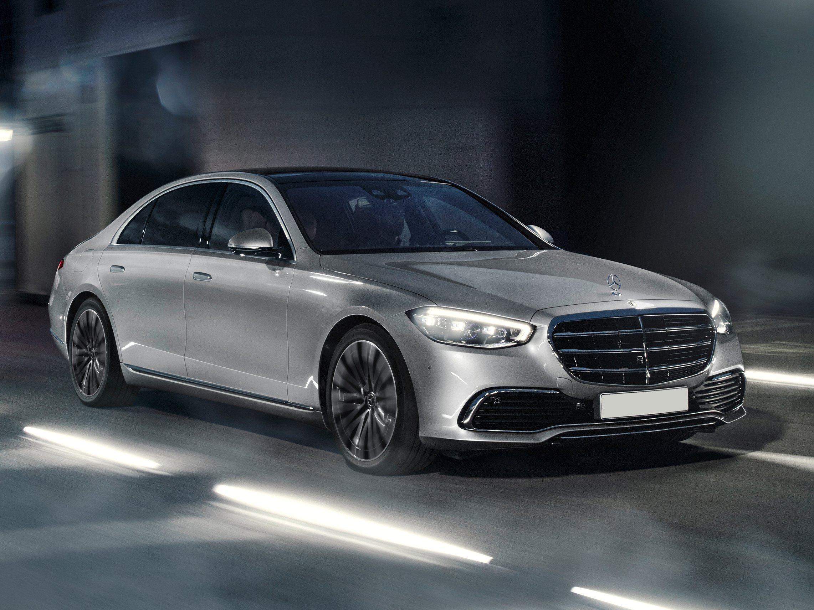
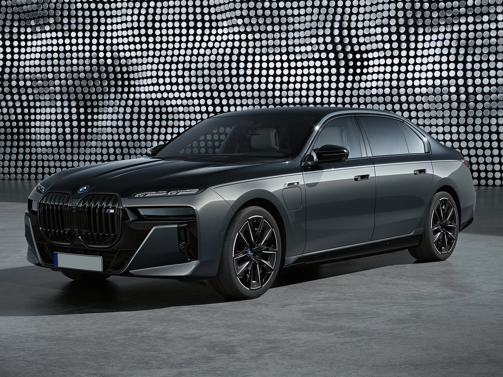
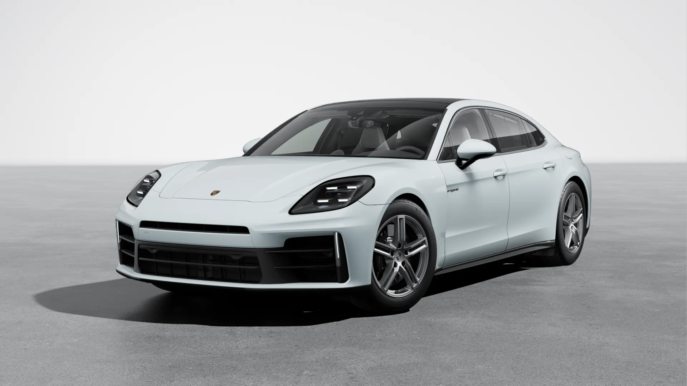
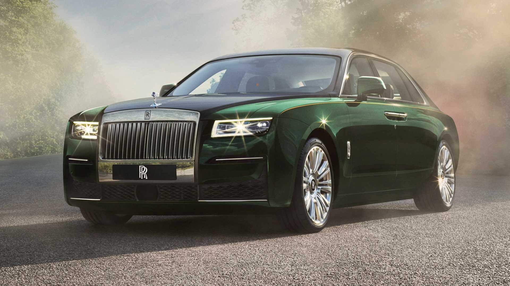

| AUTO NUOVE | ||||
| Modello | Prezzo | Informazioni | Immagine | |
| Mercedes-Benz Classe S | A partire da circa 95.000 € (per la versione base) fino a oltre 160.000 € per le varianti più esclusive. | Materiali premium come pelle, legno e metalli lucidi, con sedili riscaldati, ventilati e massaggianti. V6, V8, V12 e motori ibridi, con potenze che variano dai 330 CV fino a oltre 600 CV nelle versioni più potenti |  | |
| BMW Serie 7 | Da circa 90.000 € a 160.000 € o più per le versioni ad alte prestazioni | La Serie 7 è sinonimo di eleganza e tecnologia avanzata. È dotata di un sistema di guida semi-autonoma e offre opzioni di motorizzazione che comprendono anche un motore ibrido plug-in. V6, V8 e V12, con potenze che partono da circa 300 CV per la versione base, fino a oltre 600 CV per la M760Li xDrive |  | |
| Porsche Panamera | Da circa 100.000 € per la versione base, fino a oltre 200.000 € per le varianti Turbo S o le versioni ibride. | La Porsche Panamera unisce il comfort di una berlina di lusso alla sportività di una coupé. È dotata di motori potenti, prestazioni eccellenti e una maneggevolezza agile, nonostante le dimensioni. V6, V8, motore ibrido (Panamera 4 E-Hybrid), con potenze che vanno da 330 CV nella versione base fino a oltre 700 CV nella versione Turbo S. |  | |
| Rolls-Royce Ghost | A partire da circa 300.000 €, ma con opzioni personalizzabili il prezzo può facilmente superare i 400.000 €. | La Rolls-Royce Ghost è una delle auto più lussuose e prestigiose al mondo. Caratterizzata da una qualità artigianale eccezionale, è un veicolo che offre un'esperienza di guida senza pari. V12 biturbo da circa 563 CV. |  | |